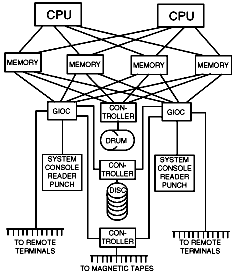
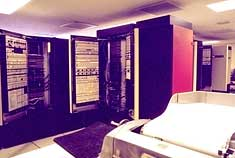

Loading
Introduction
Multics (Multiplexed Information and Computing Service) is a mainframe time-sharing operating system begun in 1965 and used until 2000. It was designed to be a prototype computer utility system that would serve the computing needs of many different users with different goals.
1. Multics Software Features
Text by THVV unless indicated.
The 1965 goals and Notable Features of Multics are described on the Multics History page:
- Segmented memory
- Virtual memory
- High-level language implementation
- Shared memory multiprocessor
- Multi-language support
- Relational database
- Security
- On-line reconfiguration
- Software engineering
Additional features are described below.
1.1. Hierarchical file system
Honeywell 6180 Control Panel
[JHS] I think that Multics was the first to provide a hierarchical file system. The influence of that innovation can be found in virtually every modern operating system, including Unix, Mac OS, DOS and Windows.
The Multics file system was also the first to provide Access Control Lists (ACLs) on every entry.
In addition, the Multics file system supported
- long names on entries
- multiple names on entries
- symbolic links
- storage quotas
- removable devices
- mandatory access control
The paper "A General-Purpose File System For Secondary Storage" describes the 1965 design of the file system. It evolved later, with some features being added and others removed.
1.2. Virtual memory management
Paul Green posted a description in May 93, Multics Virtual Memory - Tutorial and Recollections.
The original virtual memory design of Multics combined hardware-supported segmentation and paging between core, a high-speed paging drum, and disk.
Later hardware improvements replaced the drum with a solid-state bulk store.
The Multics paging algorithm evolved over time:
section V of  Multics Storage System: Program Logic Manual, AN61 describes the "clock" paging algorithm.
Multics Storage System: Program Logic Manual, AN61 describes the "clock" paging algorithm.
1.2.1 Multics Disk Interface Module (DIM)
[Tom Oke] The work done at ACTC to optimize disk performance resulted in an Adaptively Optimizing Disk DIM, in the MR11 time frame. This was the first major use of floating point within the hardcore.
This disk DIM provided a tunable, load-sensitive, optimization algorithm on a per-I/O-type, per-drive basis, and provided a site the ability to use a system-wide tunable disk-queue resource pool.
Optimization priority set a high (and exclusive) priority for VTOC I/O and Page Reads. Initial priority of Page Writes excluded them from competition with Page Reads, unless they were on-cylinder. This addressed the need to expedite blocking I/O and defer non-blocking I/O.
As queued I/Os built up for any I/O type, on a per-drive basis, the optimizer increased the priority accorded to the nearest-seek-first algorithm, for that I/O type on that drive, and the I/O became more competitive. This recognized the significance of queue resource loading converting a non-blocking I/O into a blocking I/O.
As a fallback, if any I/O on any drive was not serviced within a tunable time period, default of 5 seconds, the optimization method changed to disk combing until the stagnation criteria was resolved.
Optimization validation was done on a three processor system, with 5 MSU501 disks, and achieved sustained disk loading of 100% on 4 drives and 98% on the fifth for over 2 hours. During this time we could actually log in and do work, but it was really slow. The same load on a stock system caused page thrashing to the extent that a reboot was required to get control back. The system was so thoroughly locked up that the Initializer never got the instruction and data page in memory at the same time, and over the period of 1 hour was unable to kill the thrashing test job(s).
An interesting side-note. The thrashing test generation software was done using Multics FORTRAN Very Large Array code, since it provided easy access to large amounts of memory.
1.3. Dynamic linking
Multics needs no loader. Write a procedure, say joe, and compile: suppose the resulting binary refers to an external subroutine called fred. You can run joe by just typing its name. The command processor launches it by just finding the segment joe, adding it to the user process's address space, and jumping to the entrypoint. fred may not even exist, and if joe never calls it, no problem. If joe does call fred, a linkage fault occurs. The system linkage fault handler searches for a file named fred, adds it to the address space and fixes the linkage to go fast next time (by changing a Fault Tag 2 indirect word to an ITS pair), and continues the faulting instruction. If fred's not found, the user gets a fault message, and can quickly write a fred, compile it, and then continue execution of joe, which will then find fred. For much more on how linking worked, see the Execution Environment article.
1.4. Scheduler
The Multics scheduler began as a Greenberger-Corbató exponential scheduler similar to that in CTSS. About 1976 it was replaced by Bob Mullen's virtual deadline scheduler, which supports specification of desired real-time response (N milliseconds in M) for system processes such as printer daemons, and supports "work classes" that can be guaranteed percentages of the system's CPU resource under load (e.g., "Give Engineering 17% and Humanities 12%"). Load control groups defined by the answering service are mapped into work classes via the Master Group Table (MGT), managed by the system administrators.
Non-realtime scheduler classes are managed according to an exponential discipline that favors interactive usage. The scheduler translates the non-realtime class controls into virtual deadlines, and schedules these with the realtime class deadlines, satisfying "hard" deadlines first and virtual ones last.
1.5. Instrumentation
Multics has many metering commands, such as file_system_meters, traffic_control_meters, pre_page_meters, device_meters, tty_meters, page_trace, trace, meter_gate, meter_signal, alarm_clock_meters, vtoc_buffer_meters, total_time_meters, the ready message, and the script driver. The microsecond hardware clock made it easy to instrument code. Almost all hardcore subsystems have metering built in, running all the time; the commands just display the internal counters. The standard procedure for installing a new system release included running a 60-minute performance benchmark.
Paper: The Instrumentation of Multics by John Gintell and Jerry Saltzer.
1.6. Accounting & administration
Multics users have a user name and password. Projects are allocated resources by the system administrators. The project administration subsystem allows each project's project administrators to authorize users to use project resources by setting resource quotas.
System resources include CPU usage, memory and disk storage usage, and system connect time. CPU usage is recorded to the microsecond and is recorded for different system-defined shifts; memory residence is recorded to the page-millisecond (this unit was called the "Frankston" after its initial implementer), disk storage residence is recorded to the page-second. Individual users have disk quotas and dollar limits, administered by group administrators and project administrators.
Multics provides system administrators a set of applications for printing monthly usage reports and bills for project administrators. Multics provides tools for project administrators to allocate resources from the group resource quotas to individual users.
1.7. Languages
1.7.1. EPL
Multics developers planned to write the system in a high-level language from the start, and chose IBM's PL/I in 1965. Bell Labs engineers Doug McIlroy and Bob Morris wrote our initial compiler for a language subset called "Early PL/I" in 1967. Its genesis is described in the article on PL/I.
1.7.2. EPLBSA
EPL Bootstrap Assembler. A GE team under Tom Kinhan was working on FL, a very fancy full-macro assembler, but we needed an interim assembler in a hurry in 1966 or 1967, so Bill Poduska wrote EPLBSA, the "EPL Bootstrap Assembler." EPL compiled into EPLBSA, which was then assembled into Multics object segments.
1.7.3. PL/I
GE Cambridge Information Systems Laboratory (CISL) built a true PL/I compiler, described in the article on PL/I. A team of six people did the compiler in about 18 months in 1968-69.
The "version 2" PL/I compiler, also from (Honeywell) CISL, was robust, efficient, and a clean implementation of the language. It was finished in the early 1970s. It made much better use of the stack segment.
 Info segment describing compiler usage and control arguments.
Info segment describing compiler usage and control arguments.
 AG94: Multics PL/I Language Specification.
AG94: Multics PL/I Language Specification.
 AM84: Multics PL/I Reference Manual.
AM84: Multics PL/I Reference Manual.
Almost all of the operating system and its commands were written in PL/I.
1.7.4. ALM
Assembly Language for Multics. This assembler replaced EPLBSA. ALM was a clean, spare assembler, used for programs that needed ultimate efficiency or that issued privileged instructions, and to define and initialize data segments.
 Info segment (like a man page) for alm command.
Info segment (like a man page) for alm command.
 AN63: Multics ALM Assembler SDN.
AN63: Multics ALM Assembler SDN.
Nate Adleman, Richard Gumpertz, and Paul Green converted EPLBSA from GE FORTRAN to Multics PL/I in 1969-1970. Steve Webber wrote a stand-alone macro processor, mexp, and Bernie Greenberg integrated it into ALM in 1977 or so.
1.7.5. COBOL
The COBOL compiler was done by a group at Honeywell Billerica including Otto Newman, George Mercuri, and Frank Helwig in the mid 1970s; they ported an existing front-end and wrote a code generator for it. It made good use of the EIS instruction set. Bob May worked on the COBOL Communication Section Runtime, which provided very basic TP. Bob says, "It handled calls from other applications to interact with the "TP" processor. It passed FIPS testing the first time and that may have been the only time it ever was used!"
 Info segment for cobol command.
Info segment for cobol command.
 AS43: Multics COBOL Users' Guide.
AS43: Multics COBOL Users' Guide.
 AS44: Multics COBOL Reference Manual.
AS44: Multics COBOL Reference Manual.
1.7.6. FORTRAN
Multics had three FORTRAN compilers. Version 1 FORTRAN was written using POPS by Ke Shih at GE/CISL.
The version 2 compiler was written in PL/I at CISL, and shared a back end code generator with the PL/I compiler.
The last Multics Fortran compiler was written by David Levin, Paul Smee, Richard Barnes, and M. Donald MacLaren (completely new and totally independent of the Multics PL/I compiler). The 3rd and final version was a fast compiler that produced excellent code.
 Info segment for fortran command.
Info segment for fortran command.
 AT58: Multics FORTRAN.
AT58: Multics FORTRAN.
 CC70: Multics FORTRAN Users' Guide.
CC70: Multics FORTRAN Users' Guide.
1.7.6.1 Hexadecimal Floating Point
[Tom Oke] When hexadecimal floating point was added to the Multics CPU, ACTC developed the math library support for this feature. This included a rewrite of the Multics runtime library subroutine any_to_any_, the introduction of a number of additional data types which had very large exponent ranges, and redeveloped trig functions with higher accuracy and speed.
1.7.6.2 Very Large Arrays
[Tom Oke] Many users had indicated that the limit of 255K word segments (< 1MByte) was a significant limit in the size of arrays that they could use in FORTRAN. ACTC was commissioned to provide Large and Very Large Array support.
Large Arrays provided up to a full segment per array, packing arrays into segments as appropriate. Normal addressing was done for each array, which retained the full normal execution efficiency of the FORTRAN Compiler.
Very Large Array support provided natural addressing of arrays of up to 16MWords each. This addressing was done with pointer arithmetic and some extensions to the hardcore to support 256 page segments.
The Multics FORTRAN compiler had a good flow optimizer which produced very efficient code. The Very Large Array work included optimization of the pointer arithmetic.
Timing results indicated that a classical matrix multiply was roughly 5% slower unoptimized, and 25% slower optimized than the normal short array code. This was considered to be very good for a project which had a design envelope of VLA code no more than 2* as slow non-VLA code.
1.7.7. BCPL
 Bootstrap Combined Programming Language.
A language defined by Martin Richards of Cambridge, for bootstrapping CPL.
Richards visited MIT in 1966-68 and brought the language design with him;
BCPL was first
Bootstrap Combined Programming Language.
A language defined by Martin Richards of Cambridge, for bootstrapping CPL.
Richards visited MIT in 1966-68 and brought the language design with him;
BCPL was first  implemented on CTSS in 1967 (Document saved by Dennis Ritchie).
Richards' paper
implemented on CTSS in 1967 (Document saved by Dennis Ritchie).
Richards' paper  Christopher Strachey and the Development of CPL describes his implementation of BCPL on CTSS and the GPM macro generator.
Christopher Strachey and the Development of CPL describes his implementation of BCPL on CTSS and the GPM macro generator.
Dennis Ritchie and Rudd Canaday of BTL ported CTSS BCPL to Multics. Ken Thompson wrote a version of QED in BCPL, and Doug McIlroy and Bob Morris wrote Multics runoff in BCPL based on Jerry Saltzer's MAD version of RUNOFF for CTSS.
Robert F. Mabee maintained Multics BCPL after the divorce from Bell Labs. The BCPL runoff command was used by Honeywell documentation to produce Multics manuals for years, until they switched to compose. Bob Daley wrote the Multics qedx command in PL/I to replace the BCPL qed command.
1.7.8. APL
"A Programming Language," defined by Ken Iverson of IBM. There were two versions of Multics APL, the first one done by Max Smith at CISL, based on the original IBM APL. The second one, based on IBM's APLSV, done in the summer of 1973 by MIT students Dan Bricklin, Dave Moon, Richard Lamson, Gordon Benedict, and Paul Green, is a fairly complete implementation of APL. It even includes the I-beam command that translates text to a function.
 Info segment for apl command.
Info segment for apl command.
 AK95: Multics APL Users' Guide.
AK95: Multics APL Users' Guide.
1.7.9. BASIC
The first BASIC we had was true DTSS BASIC running under emulation. Then there was the FAST and DFAST subsystems. Both ran Dartmouth language processors; FAST was more Multics like, and DFAST simulated Dartmouth conventions.
 Info segment for FAST environment.
Info segment for FAST environment.
Barry Wolman wrote a BASIC compiler which produced native Multics object segments; although quite powerful, it didn't get wide usage. There was also an extended precision implementation of the BASIC compiler called ep_basic.
 Info segment for basic command.
Info segment for basic command.
 AM82: Multics BASIC.
AM82: Multics BASIC.
 AM82A: Multics BASIC Update.
AM82A: Multics BASIC Update.
1.7.10. MACLISP
[Written by Bernard Greenberg, with contributions from Daves Moon and Reed and Carl Hoffman.] Multics LISP was one of the first LISP implementations on virtual memory. Multics Version I Lisp was entirely in PL/I (including its compiler, which is extremely unusual) by Dave Reed, then an undergraduate at MIT, and was part of the Standard Service System libraries. It was not compatible with any other well-known Lisp. There was no Multics software written in it, and it never achieved a following or user community.
Version II Lisp was known as "Multics MacLisp" (From "Project MAC", see above.) The need for it arose from the MIT Mathlab group's (part of project MAC, later Laboratory for Computer Science) "Macsyma" program, which was written in Lisp, hitting against the address space constraints of the PDP-10 systems on which it was developed. The large virtual memory of Multics seemed to indicate the latter as a logical migration platform, so Multics MacLisp was developed to support Macsyma.
 Info segment for lisp command.
Info segment for lisp command.
Multics MacLisp was designed to be compatible with the large, mature, and heavily used "MACLISP" dialect in use on the PDP-10's throughout the AI Lab and MAC, and implemented between 1970 and 1973. Reed, then an undergraduate at MIT in the Multics group, started the project by modifying Version I Lisp, writing largely in PL/I. Ultimately, several of the most performance-critical sections, most notably the evaluator, were rewritten in a tour-de-force of ALM (Multics Assembler) by Dave Moon. Almost all of the implementation was done by Daves Moon and Reed and Alex Sunguroff; Moon was working in the MIT Undergraduate Research Opportunities program; Sunguroff, who worked on the I/O system, was a paid employee. Dan Bricklin, later of VisiCalc fame, worked on the BIGNUM (arbitrary-precision integer arithmetic) package.
The Multics MacLisp Compiler, initially designed and written by Reed alone, was a full-scale Lisp Compiler producing standard Multics object segments (which nonetheless had to be run from within the Lisp subsystem). Its two phases, semantics and code generation, both written in Lisp, were derived in conception and strategy from COMPLR/NCOMPLR, the renowned and powerful compiler on the PDP-10. While the code generator was written from scratch, the semantics phase was ported and adapted from PDP-10 MacLisp. Reed's code generator employed a subset of NCOMPLR's powerful data-flow techniques. [A 1977 paper on The Multics MacLisp Compiler by Bernard Greenberg is available at this web site.] A "LAP" (intrinsic Lisp assembler program) was written a couple of years later by Moon.
Although Macsyma was ported to Multics, it was not a further impetus for much Multics Lisp development thereafter. The cause of Multics Lisp was taken up by Bernard Greenberg, who had just come to Honeywell (1974) after having been attracted to Lisp while sharing an office with Moon at MIT. Greenberg, who was involved with the development and continuation of the Multics Supervisor, implemented a Multics post-mortem crash-analysis program, ifd (interpret_fdump) in Multics Lisp, which in subsequent years achieved wide distribution and following in the Multics Community. While the "official language" status of PL/I actively and openly discouraged experimentation with other languages, the interactive, extensible nature of ifd did much to attract attention to Lisp in the Multics development and site support communities.
From that time until his departure from Honeywell in 1980, Greenberg took over maintenance of Multics Lisp, adding features as he needed. Moon still contributed major features on occasion.
Largely as a consequence of the ifd experience, Greenberg chose Multics Lisp as the implementation and extension vehicles for Multics Emacs (1978), which drew attention to Lisp from all over the Multics community and to Multics from all over the Lisp community. Multics Emacs elevated Multics MacLisp to criticality in a highly visible and significant Multics offering. Multics Emacs' (see separate section) highly successful use of Lisp as (inter alia) an extension language inspired the use of Lisp as such by later generations of Emacs (e.g., GNU).
Multics MacLisp featured exploitation of the huge Multics address space, a copying linearizing garbage-collector, two-word "ITS" (indirect-to-segment) pointers with nine-bit type fields, fullword, immediate integers and floats (hence, no need for "number space" and its concomitant inefficiencies), pure, shareable compiled code (as in all of Multics), and two stacks besides the regular Multics stack (GC-marked and non-GC marked). Because of the large pointers, immediate numbers, and the resulting lack of need for "special purpose pages", Multics MacLisp was to a large degree free of the curse of arcane numeric declarations and fragile number-flow tracing that plagued the PDP-10 implementation. System symbols were lower-case and reading was case-sensitive, consistent with the rest of Multics but few Lisps.
A powerful, efficient call-out-to-PL/I feature (defpl1) in the compiler (but not the interpreter) was among the novelties of the implementation. (PL/I programs could not call arbitrary Lisp routines, although the support of PL/I->Lisp callbacks was provided for the Emacs interrupt system). defpl1 could actually receive and create arbitrary-length strings (returns char (*)) from PL/I, in a way far more natural than PL/I's own.
The Lisp libraries (written in Lisp) featured optional trace and prettyprint packages and the like, largely taken verbatim from the PDP-10. Carl Hoffman, Glenn Burke, and Alan Bawden upgraded these libraries in 1979 and 1980 to incorporate a large number of language enhancements (backquote, defstruct, etc.) that had been accepted as near-standard in the AI community, and were on their way to becoming part of Common Lisp.
Multics MacLisp was paid for and owned by MIT. It was part of the "author maintained" library at MIT. When it became necessary to distribute it as part of Emacs, which was a Honeywell product, one of the first parts of Multics to be sold as a separate product, incidentally, a deal was struck permitting Honeywell to distribute it. As the close relation of Lisp and Multics Emacs tied the maintenance of the two together, Greenberg was succeeded as the maintainer of both, upon his departure to Symbolics in 1980, by Richard Soley and then Barry Margolin at CISL.
1.7.11. Macsyma
Dave Moon ported Macsyma to Multics in 1974. Carl Hoffman, Alan Bawden, and Glenn Burke updated it around 1980.
1.7.12. ALGOL 68
[Warren Johnson] HIS UK commissioned this to a group of people at Bath University. Martyn Thomas, of X-Open fame, was the team leader. Geoff Reece was another team member.
[Kit Powell] John Baker worked on the project, seconded from Bristol University to SWURCC who had the contract to do the Multics Algol68 implementation.
1.7.13. Pascal
[Thomas Hacker] at Oakland used a Pascal compiler from Grenoble University.
[James Gosling] James Gosling wrote a Pascal at Calgary for Multics, but Bull chose to support the Grenoble one instead. The Gosling compiler became "a cult classic."
1.7.14. C
The Multics C compiler was developed at ACTC from the Portable C compiler by a group led by Tom Oke, and including Doug Robinson, Alfred Hussein, and Doug Howe. Most of the difficulties which ensued in the development surrounded getting an addressing model for the "cookies" which matched the Multics hardware addressing. The Multics register model and the PCC register model collided a lot.
[Tom Oke] The compiler was not particularly efficient, due to the nature of PCC, and the lack of optimization, but it provided utility to those who succeeded in getting their applications up and running.
[Stan Zanarotti] John Wilson worked on porting TeX to Multics using the new Multics C. (need more info. who worked on this, was it a product?)
[David Collier-Brown, Alan Bowler] A C compiler for Multics was proposed at Waterloo. It was to be derived from the GCOS 8 compiler. Preliminary investigations were done but no formal bid was submitted, and the project got lost in internal Honeywell politics.
1.7.15. Minor languages
Many Multics facilities have "little languages," defined with the parse_file_ subroutine, that read an ASCII file and produce a simple binary structure. The administration package contains five or six of these, for example cv_pmf.
1.7.16. DTSS provided languages
[Paul Karger] There was an ALGOL-60 compiler that ran under DTSS emulation. I got it running about 6-9 months after the DTSS BASIC compiler. There was also a DTSS Fortran compiler that would run, but I don't think we installed that, since Multics already had a FORTRAN compiler.
1.7.17. ML
[preface to the 'ML Handbook'] The ML system was adapted to Maclisp on Multics by Gérard Huet at INRIA in 1981, and a compiler was added... Video interfaces have been implemented by Philippe Le Chenadec on Multics.
1.7.18. GCOS Simulator
Multics could run programs written for GCOS in a single segment, under the GCOS Simulator.
 AN05: GCOS Environment Simulator.
AN05: GCOS Environment Simulator.
1.7.19. MOWSE
The Multics Online Work Station Environment, MOWSE, was an IBM PC support package. It allowed a PC to communicate with a Multics system and to exchange requests for information or processing. A terminal emulator called wsterm was provided on the PC to log into a Multics session.
 Info segment for MOWSE environment.
There was a MOWSE manual, GB66, but it is not online.
Info segment for MOWSE environment.
There was a MOWSE manual, GB66, but it is not online.
1.7.20. WORDPRO
Need info on this.
It was an attempt to sell Multics features like compose and text editing.
 AZ98: Multics WORDPRO Reference Guide.
AZ98: Multics WORDPRO Reference Guide.
1.7.21. Executive Mail, Executive Forum
Need info on this. First release was MR9.0. There were manuals, CX20, DX71, CX72, but they are not online.
1.8. Command language
[JHS] Multics originated the concept that what you type at command level should be the name of a program that you want to call; a whole flock of ideas such as search rules, working directories, the shell, and redirectable I/O accompanied that innovation, and again this set of innovations is found in virtually every operating system that followed. (In CTSS and earlier systems, all commands were owned by the system, which had to be recompiled to add one; you ran your own programs by executing a system command that loaded and ran them.)
See Multics Commands and Active Functions for a list of commands, and the command language section of the Glossary for more details on the command language.
 AG90-03, Multics: Introduction to Programming on Multics
AG90-03, Multics: Introduction to Programming on Multics
 AG91-04, Multics: Reference Guide
AG91-04, Multics: Reference Guide
 AG92-06, Multics: Commands and Active Functions
AG92-06, Multics: Commands and Active Functions
 AG93-05, Multics: Subroutines and I/O Modules
AG93-05, Multics: Subroutines and I/O Modules
1.8.1. emacs
Multics Emacs is a real-time, character-at-a-time, interactive, display-oriented editor implemented in the late 1970s by Bernard Greenberg.
It took advantage of video display terminals and high speed communications.
{See
"Multics Emacs: The History, Design and Implementation"}.
 Info segment for emacs command.
Info segment for emacs command.
 CH27: Multics Emacs Manual
CH27: Multics Emacs Manual
 CJ27: Emacs Text Editor User's Guide
CJ27: Emacs Text Editor User's Guide
 CJ52: Emacs Extension Writer's Guide
CJ52: Emacs Extension Writer's Guide
1.9. User programming environment
The Multics user program environment is described in detail in "Execution Environment".
1.10. Graphics
The Multics Graphics System (MGS) was heavily influenced by the design of the ESL Display station attached to CTSS at Project MAC in the mid-60s. This device was a display-file driven computer with DMA access to the 7094's memory. MGS graphics programs were device-independent and object-oriented, and worked on both dynamic graphic devices and on the relatively low-cost and low-speed storage tube devices such as the CGI ARDS and the Tektronix 4103.
2. Multics Hardware Features
2.1. GE-635 and simulators
The original Multics machine, the GE-645, had some design details derived from an experimental GE machine at Schenectady. This machine was a modified GE-635. The GE-635 was very similar to the IBM 7094: same 36-bit word, accumulator, quotient register, index registers. The 635 had more indirect address modes and had 8 XRs instead of the 7094's 7. The 635 was derived from the GE M236 computer supplied by GE to the US Air Force in the early 60s.
Simulator
While the 645 hardware was being designed and built, we ran Multics on the 645 simulator, running on the 635 at MIT Project MAC. This arrangement was called the "6.36" system, because the working designation for the new machine was the 636, and the simulator was 100 times as slow. Project MAC had a 635 in the same 9th floor machine room at Tech Square as the 7094 that CTSS ran on, and programmers generated GEIN tapes using the CTSS MRGEDT command, which called a special supervisor trap to write a tape in 635 format. Operations would carry the tape to the 635 and input the job to GECOS III, and run simulator jobs, which usually ended with the simulator detecting a trap and taking a dump of virtual core. The dump was put on an output tape and input to CTSS via the disk editor; the programmer then debugged using the interactive GEBUG debugger on CTSS. EPL compilations were done on CTSS at first, and then moved to the 635.
2.2. GE-645 (January 1967)
See Glaser, E. L., J. F. Couleur, and G. A. Oliver, "System design of a computer for time-sharing applications", for a general discussion of the GE-645.
Installations
Only a few 645 systems were built. MIT had one, there was one at GE Phoenix, and one at Bell Labs Murray Hill. In the early 70s, after the merger, Rome Air Development Center got one, Honeywell Billerica, and Bull Paris. One processor of the Paris 645 was dropped off a loading dock at Logan Airport as it was being shipped, and they had to find an alternate CPU.
2.2.1. System block diagram
Here is the block diagram of a small Multics GE-645 system, similar to the initial system installed at MIT.

2.2.2. 645 Processor
Cycle time was 1-2 microseconds for most instructions. The basic speed of the 645 was about 435 KIPS. CPUs operated in paged or unpaged addressing mode. The 645 CPU added extra circuitry called the Appending Unit (APU) which handled segmentation and paging. Th APU used the Descriptor Segment Base Register (DSBR), which pointed to a memory table called the Descriptor Segment. Each Segment Descriptor Word (SDW) described a segment or had a Segment Fault tag. Segments could be paged, in which case the segment descriptor pointed to a Page Table; each Page Table Word (PTW) contained the absolute address of an individual page or flagged the page with a "page fault" tag. Alternatively, segments could be unpaged, with the SDW pointing to an absolute memory address. A Translation Lookaside Buffer called the "associative memory" cached recent paged mode lookups for speed. Segment descriptors contained access control flags allowing read, write, and execute. The 645 CPU added 8 Address Base Registers to the 635 architecture: these could be "paired" to hold pointers with a segment number and offset. The 645 CPU also added multiple segment-related indirect tags to the instruction format.
2.2.3. Memory
The GE-645 used 1us cycle memory and had 256KW/box. (Richard Shetron reports that the RADC 645 had 500ns core memory. Maybe all 645s did, have to check this out.) The memory controllers (passive devices) were the center of the system. Memory controllers received requests from active devices like CPUs, and had complicated arbitration and priority. The memory controllers also supported a few read-alter-rewrite operations, crucial for synchronization.
2.2.4. Firehose drum
Also called the Librafile. A large, fixed-head disk used first as simply the highest-speed secondary storage device, then as a storage device targeted for user temporary segments such as stacks, and finally as the first paging device. "Firehose" was a reference to its high rate of data delivery. It had a capacity of 4 Million 36-bit words, and could move 1024 words (one page) in 4ms with a 16ms average latency. (more)
2.2.5. GIOC
General I/O Controller. An active device that had its own access to memory. Had subchannels for disk, tape, terminals. See the 1965 FJCC paper "Communications and Input/Output Switching in a Multiplex Computing System," by Ossanna, Mikus, and Dunten.
2.2.6. Disk subsystems
Initial MIT configuration had 136MB of disk.
[Richard Shetron] I don't remember the model off the top of my head, but the RADC machine had 200MB/spindle drives (7 of them in early 79).
(more: Milking the DS-10s)
2.2.7. Calendar clock
The 645 clock was a huge box, 8 foot refrigerator size, containing a clock accurate to a microsecond. It hooked into the system as a "passive device," meaning that it looked like a bank of memory. Memory reads from a port with a clock on it returned the time in microseconds since 0000 GMT Jan 1, 1901. (52-bit register) The clock guaranteed that no two readings were the same. It had a real-time alarm register also. Inside there was a crystal in an oven, all kinds of ancient electronics. The clock diagnostics were very primitive: once we ran them when the clock was disconnected, and it passed! "No clock on this port, try to read it, shouldn't get any answer, check." Later hardware versions did the clock differently, put it inside the memory controller.
The CPUs each had an interval timer, a memory cycle counter that could be used for scheduling and CPU accounting.
2.2.8. Grochow XRAY display
On the 645 we had a special GIOC adapter which looped sending requested memory locations to a PDP-8/338 over a 2400 baud phone line. Jerry Grochow wrote a thesis about monitoring Multics operation from this display.
2.2.9. Peripherals
PRT202 printer, tapes, card reader, punch, RACE unit, GIMPSPIF. MG set on 10th floor. (more)
2.2.10. Terminals
TTY37, IBM 1050, IBM 2741 over phone lines. ARDS over 202c6 Dataphone: 1200/110 baud. (more)
2.3. Honeywell 6180 (11/72)

6180 at MIT, circa 1976
In the early 1970s, Honeywell bought the GE computer division and came out with a new version of the 600 line called the 6000 line, implemented using integrated circuits and larger boards. Multics got a new machine at this time, the Honeywell 6180. MIT professors Saltzer, Clark and Schroeder and the CISL team, especially Steve Webber and the PL/I code generation team, made many suggestions for improvement of the Multics CPU.
2.3.1. Processor and memory
[THVV, Richard Wendland & WOS]
Al Kossow has posted a PDF of a 1985 version of the  Multics CPU manual, Honeywell order no. AL39.
Bob Mabee has created a searchable PDF of AL39 from the compose source.
Multics CPU manual, Honeywell order no. AL39.
Bob Mabee has created a searchable PDF of AL39 from the compose source.
- CPU speed about 1 MIPS
- Max of 2^15 segments (previously 2^18)
- Max segment size of 2^18 36-bit words (previously 2^16)
- Registers: A, Q, E, 8 index registers
- 35 (check this) indirect addressing modes, ITB mode removed
- Indicators: zero, negative, carry, overflow, underflow, truncation
- 8 pointer registers (replaced 4 ABR pairs)
- packed and unpacked pointers
- "Segment Descriptor" and "Page Table Word" differ, as does virtual to physical translation details
- 8 hardware supported rings (previously 64 software rings), ring alarm register, current ring register
- inward ring calls by hardware (new CALL instruction)
- 91 extended instructions (EIS) new, 9, 6 & 4 bit byte & 1 bit ops. These were multi-byte character string and decimal operations (we used to joke that it was as if a 7094 had swallowed a 1401). EIS had its own set of "pointers and lengths" registers, and supported an edit operation that did COBOL and PL/I conversions.
- 2K cache in CPU for non-write-shared instructions & data (MCR373 04/23/74, added support for cache to page control)
- Other new instructions were added to the CPU, STAC and STACQ in particular.
- atomic add-to-storage and compare-to-storage
- Associative memories were redesigned.
- microsecond resolution, non-repeating calendar clock in SCU
[Richard Shetron] The semiconductor RAM was 750ns on the early models in the late 70's. I think the early boxes were 4MW/box and later this was upped to 16MW/box. RADC upgraded to a 6180 CPU but kept the 500ns core memory. Simple integer instructions took 500ns, floating point around 2-4us.
Clock was changed from a separate active device (used up a port) to being contained in the memory controller. A lot of cleverness had to be done to make programs portable between the 645 and 6180.
Instruction Set
Ron Harvey has provided two tables that list the 6180 opcodes.
These are from Appendix A of the Multics Processor Manual, order number AL39-01, with updates A and B applied, taking the manual to February of 1982. The rows and columns are labeled in octal. The meaning of each mnemonic is excerpted from Chapter 4 of AL39.
2.3.2. Bulk store
(more: big slow core bank, replaced drum, used as paging device)
2.3.3. DN-355
(more: replaced GIOC terminal channels with a more standard Honeywell data communications product, connected through the IOM. After a while migrated to use standard DN-355 software (NPS?) as well.)
2.3.4. IOM
(more: Input-output multiplexer. Replaced GIOC with standard Honeywell I/O channel product.)
2.3.5. Disk subsystems
(more: capacity of a DSU-270 (1970) was 10MB, MIT had 15 of them)
2.4. Honeywell Series 60 Level 68
[WOS] The Series 60, Level 68 was just a repackaging of the 6180. The nomenclature "Level 68/M" is incorrect; "68" implies Multics. Major changes included boxes Dick Douglas (a rather short LISD VP) could see over the top of, and front panels with LEDs instead of little tiny light bulbs. No software-visible changes in the processor (with perhaps the exception of some hardware ID configuration register or such). There were visible changes in memory and I/O stuff, as Multics came to support the newer modules developed for GCOS (bigger memory, more I/O channels, bigger disks, etc.), but I don't believe those ever coincided with a change of marketing designator--they just happened in the normal course of events.
This line was later called the DPS-68, and the DPS-2, -3, and -4; no changes except in marketing designation.
There was a "cut down" 68/80, called the 68/60, that had a one-wire change to disable the cache... actually a switch, 'cause the diagnostics wouldn't run with the cache off. This was a rarity, and I think only sold to a few universities.
2.5. Honeywell DPS-8/M
[WOS, Deryk Barker] These were introduced in late 1982 or early 1983, and continued to be sold until 1987 or so (fully two years after Multics was canceled for the last time!).
The DPS8/70M, and its later slowed-down cousins, the DPS8/62M and DPS8/52M, were the last of the delivered Multics machines. These were based on the GCOS/CP-6 models of the same hardware (which had no suffix for GCOS, or suffix C for CP-6, but were otherwise identical). The CPU was rated at about 1.7 MIPS. The hardware change was significant: I think only about one-third of the boards were identical, another third to half were modified a little, and the remainder (addressing and such) were completely different.
The 8/52M and 8/62M just had delays inserted in their clocks; this made the machine timing less reliable, and it took a LONG time to debug. The 8/70M trailed the GCOS model by about two years, the little ones by even more. Hardly any of the slow ones were sold, since they were more expensive to manufacture than the 8/70M.
There was never a Multics equivalent to the small DPS8 machines (DPS8/20, DPS8/44). A pity, since these were compact and microcoded, and actually had enough internal register space and addressing to support the Multics memory architecture. They were bloody expensive to build, though, as I recall (like all Honeywell hardware, though, curiously, these had been designed by Toshiba), and the low sale price just wasn't attractive enough.
The 8/70M came with an 8K (word) cache, later upgraded to 32K (word); the latter was definitely optional. The 8K cache yielded about 1.68 times the performance of the 6180, the 32K cache about 1.85 times.
There were a few software-visible changes, mostly in configuration registers and the like, but one significant user-visible change: hexadecimal mantissa floating point for increased exponent range. And, of course, there were new (from GCOS) memories, I/O controllers, and peripherals.
UCC got the first production DPS 8s (one of whose doors, containing the massive front panels, fell off during installation, leaving the engineer holding the thing so it wouldn't pull the connecting cable out by its roots). As such, it certainly had the 8K cache installed, and may have upgraded to 32K later.
[Paul Farley] When the DPS8/70M was built, with the maintenance processor handling the display of register contents to a VIP, the lights were totally removed. All that was left was a small panel for doing some switch configuration.
2.6. Honeywell ADP, also ORION, eventually DPS88
[WOS] This machine was never produced, and I do not believe the Multics implementation ever saw complete silicon. It was to have been a Multics version of the GCOS DPS88, and would have been about 6 times faster than the DPS8/70. Software work got quite a ways on this, though; that was the last project for which I was responsible at Honeywell. I believe this got canceled for good around 1982. There is some internal evidence (in Multics source) that the ADP Multics was resurrected after its Fall 1981 death before being killed again.
Thanks to Ron Harvey for inputting the 6180 instruction set.